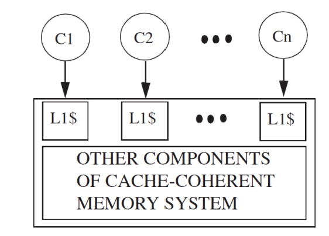
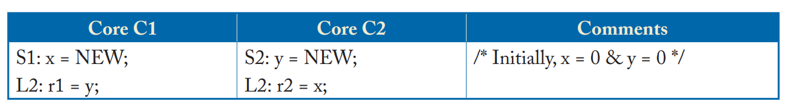
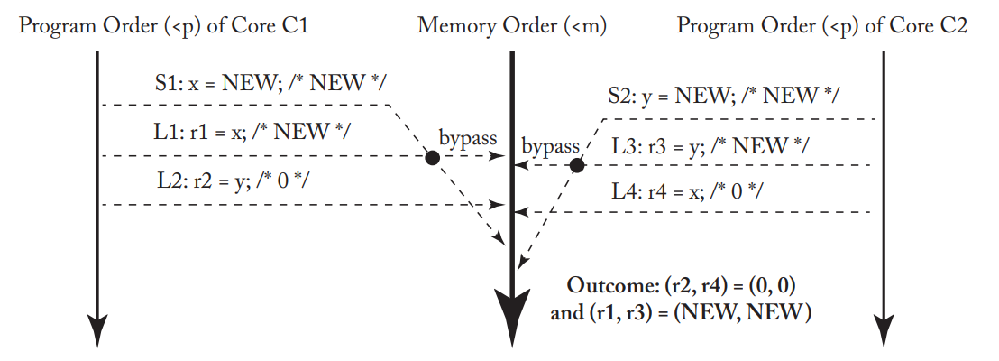
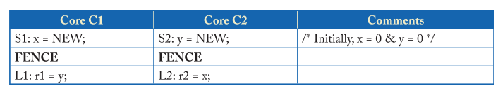

内存模型
本文最后更新于：2023年11月1日 下午
- 参考
- https://blog.csdn.net/weixin_43008591/article/details/131872164
- https://zhuanlan.zhihu.com/p/422848235
- https://blog.csdn.net/qq_29328443/article/details/107616795
- https://zhuanlan.zhihu.com/p/563126470
- https://zhuanlan.zhihu.com/p/563127372
- https://blog.csdn.net/qq_29328443/article/details/104215898
- https://gitee.com/laokz/OS-kernel-test/blob/master/memorder/riscv.md
- https://drive.google.com/file/d/1s0lZxUZaa7eV_O0_WsZzaurFLLww7ou5/view
- https://zhuanlan.zhihu.com/p/21387258
- 《A Primer on Memory Consistency and Cache Coherence》
0. 写在前面
- 这部分知识的学习是兴趣导向，没有项目支撑，可能部分理解并不正确，欢迎一起讨论。
1. 隐式 & 显式 内存访问
- 隐式：从存储器中取出指令的过程。
- 显式：加载/存储指令，根据指令的地址进行显式读写内存操作。
2. 内存一致性模型
2.1 共享内存 执行顺序问题
- 举例如下，C1和C2执行顺序可以有多种组合，r1、r2的值也会有多种结果，如下表所示。
- 甚至对于一些系统，{r1,r2}={0,0}.而这些执行顺序是都满足cache coherence。
| r1 | r2 | 执行顺序 |
|---|---|---|
| 0 | NEW | S1-L1-S2-L2 |
| NEW | 0 | S2-L2-S1-L1 |
| NEW | NEW | S1-S2-L1-L2 |
2.2 Sequential Consistensy
2.2.1 关于 SC
- 该模型要求
- 所有的内存访问操作都是原子操作，即两个/多个核不能同时对内存进行操作。
- 对于单个核内的内存访问要求严格按照程序代码顺序执行（无论是指令顺序执行/乱序执行）。
- 对于多核间，程序代码可以任意顺序交织执行。
- 举例如下
- 图中(a)(b)(c)满足顺序一致性模型；(d)不满足顺序一致性模型，因为Core2的程序顺序(S2,L2)和内存顺序(L2,S2)不一致。
2.2.2 SC 实现方法
- 简单的SC实现
对于多任务的单核处理器：
- 在单个核上执行所有线程，线程T1执行一段时间后，进行上下文切换，之后再开始执行T2。
- 在上下文切换时必须保证完成所有之前的内存访问指令，来保证SC的规则。
使用 Switch模块 处理多核间的内存访问请求：
- 前面介绍到SC模型是原子操作，所以内存模型提供的核和内存之间的抽象接口应该是下图的Switch开关模型。
- 每个核按照自己对应的程序顺序向Switch模块发起内存访问请求，Switch模块负责接收内存请求，并处理。
这两种方法可以证明SC模型的可行性，但是随着核的数量增加，会很快遇到性能瓶颈。尤其Switch开关让人觉得SC模型无法并发执行，实际可对其进行优化，提升性能。
- 有 Cache 一致性的基础SC实现
增加cache，可以并行执行 不冲突的store和load操作。
- 这里冲突的定义是，在同一时刻，两个操作同时访问一个地址，且其中至少一个操作是store。
- 这里冲突的定义是，在同一时刻，两个操作同时访问一个地址，且其中至少一个操作是store。
如下图，每个核对应一个cache。这篇博客中有介绍多核Cache间的一致性，可通过缓存一致性协议（MESI/MSI/MOESI等）保障。

- 这里假设使用的是MSI协议，那么可以通过cache的MSI状态，来设定当前的内存是否可读/写。
- Modified状态，表示当前内存可读可写。
- Share状态，表示当前内存只可读。
- 注意：这里可读可写指的是内存，只有在M状态，会出现cacheline中的数据载入内存中。
- 这里假设使用的是MSI协议，那么可以通过cache的MSI状态，来设定当前的内存是否可读/写。
- 有 Cache 一致性的优化SC实现
- 目前大部分内核的SC实现会在基础SC实现基础上加很多技术以提高性能，下面将详细介绍。
- （1）Non-Binding Prefetching
- 硬件预取相关内容可看这篇博客。
- 可以通过硬件预取的方式，隐藏内存访问延迟，降低cache 失效带来的延迟时间。
- 由于非绑定预取的预取值是放在cache/buffer中的，仍需满足cache
coherence。不会影响到内存模型。
- （2）Speculative Cores
- （3）Dynamically Scheduled Cores
- （4）Non-Binding Prefetching in Dynamically Scheduled Cores
- （5）Multithreading
2.2.3 SC 内存模型下的原子操作
- 原子操作就是不可中断的一个或者一系列操作，不会被线程调度机制打断的操作。
- 实现原子操作并不难，但是过于简化的设计会导致性能不佳。
- 例如，在原子操作开始时，让处理器锁定内存系统，防止其它内核进行内存访问，在完成原子操作（读/写）之后，再打开内存系统义工其它CPU访问。
- 原子RMW操作
- RMW：如果CPU想要更改一个变量的值，那么发生的操作为：从内存读出对应地址的值放到寄存器中（read），然后修改寄存器中的值（modify），最后将修改后的值写回内存位置（write），这个过程称为RMW。
- RMW的原子操作可以通过在缓存中实现，注意由于SC对内存操作顺序的严格要求，不存在store
buffer、invalid queue。
- 在单个CPU的缓存中实现load和store操作，期间阻塞其它CPU发来的一致性请求信息，在原子操作完成之后再响应其它处理器即可。
- 前提条件：原子操作对应的cacheline状态为M（这里仍假设使用的是MSI协议，如上介绍只有M状态可读可写）。
- 可以对上面的实现方式进行优化
- 考虑到MSI协议中S状态也可读，所以可以实现在不违反原子性的情况下，允许load和store中间有其它操作。
- 举例：原子操作对应的cacheline状态为S，此时可以进行load操作，期间若当前CPU发生写操作，那么会更改状态为Modified，此时可以发生store操作。
- 但是上面这个过程并不一定能够保证原子性，即无法保证在load和store操作是否会有其它CPU发起一致性请求信息，导致当前CPU的cacheline状态被更改。所以需要处理器进行检查。
2.3 Total Store Ordering（TSO）
2.3.1 关于TSO
为什么需要TSO
举例1如下

- 在考虑存在store
buffer的情况下，那么两个处理器可以按照下面的顺序执行：
- （1）C1执行S1，将store的新值NEW放到store buffer中。
- （2）C2执行S2，将store的新值NEW放到store buffer中。
- （3）C1和C2分别执行内存load操作，此时load的值均为0。
- （4）最后CPU将store buffer中的值写回内存中。
- 注意：CPU在load 内存值前，会先查看store buffer，因此C1是可以看到x的值，但看不到y的值，所以r1=0；C2同理。
- 在考虑存在store
buffer的情况下，那么两个处理器可以按照下面的顺序执行：
上面描述的执行违反了SC，使用store buffer这类可提升性能的硬件设计，需要对内存操作进行重排序。
- 对于SC模型，四种内存操作顺序组合中，四种都需满足，严格按照程序顺序向内存发起访问请求。
- 对于TSO模型，四种内存操作顺序组合中，仍需满足load-load/load-store/store-store这三个约束，仅支持store-load重排序操作。
举例2如下
- C1首先将x的新值NEW写入store buffer中，同理，y的新值NEW也被放到C2的store buffer中。
- C1、C2首先进行的内存操作是L1和L3，此时CPU查看到C1、C2的store buffer中都有x和y的值，所以r1和r3的值分别为新值。
- C1、C2之后进行的内存操作是L2和L4，此时C1和C2分别看到y和x的值为初始值，所以r2和r4的值均为0.
- 最后进行的内存操作是S1和S2，此时进行的是store-load重排序，满足TSO模型，将x和y的新值NEW写入内存中。

2.3.2 TSO 实现方法
- 与SC模型类似，可以使用Switch实现，或是带缓存一致性的内存模型实现。
- 与SC的区别在于添加了store buffer。
该store buffer可以选择为每个CPU分别添加一个或是使用共享store buffer，但buffer中每个条目由CPU id进行标记，需要对应的id相匹配。
2.3.3 TSO 模型下的原子操作
- 这里仍以RMW原子操作为例：
- 考虑到store操作需要CPU从store buffer中取值写入内存，由于TSO模型支持Store-Load重排序，那么可能会发生下图情况，其中S1为之前的store操作，此时难以保证RMW的原子操作。
- 因此，原子RMW操作应在清空store buffer之后再执行。
这里清空store buffer的意思是指将store buffer中所有的值都写回内存中。
为了保证load之后可以马上进行store操作，需要在load时保证对应cacheline状态为M状态（可读可写状态）。
- 由于此时cacheline的状态为Modified状态，所以store操作可以直接写入cache中，绕过store buffer。
并且在load和store之间不能处理缓存一致性相关信息，在完成store操作之后再处理。
2.3.4 FENCE 指令
- 在TSO下，store-load可以发生重排序，当程序员希望store-load之间为定序，那么可以通过插入FENCE指令来实现。
如下表，由于C1和C2都在S和L操作之间插入了FENCE指令，所以在FENCE时，需要将store buffer中所有的值都写回cache中。因此最后的结果不可能是{r1,r2}={0,0}.

- 在这篇博客中，有介绍可通过内存屏障来保证一些内存操作的顺序，其中使用的函数smp_mb()是封装在linux操作系统层的。
- RISC-V的指令集架构中是提供了Fence指令来做内存访问的同步。
2.4 Relaxed Consistensy
2.4.1 关于 RMO（Relax Memory Order）
- 为什么需要RMO
- 一些情景下，内存操作顺序即使发生重排序也不会影响最终语义，此时可以放松内存模型限制来提升性能。
- RMO下需要程序员根据内存操作之间的数据依赖关系考虑 添加内存屏障等操作 来保证顺序。
2.4.2 RMO 下提升性能的优化方法
- （1）Non-FIFO, Coalescing Write Buffer
- 在TSO中，我们要求Store Buffer必须是基于FIFO实现的。因此写入buffer的数据顺序就是刷入cache中的顺序。
- 在RMO中，Store Buffer的设计 允许 来自一个 cacheline
的相近几个写请求被合并到一个store buffer表项中。
- store buffer的合并写入也需要特定的要求限制，具体分析可以学习ARM架构下Store Buffer的设计。具体可见这篇博客。
- 另外，如果两个store之间存在FENCE指令，那么也不可以合并写入。
- （2）Simpler Support for Core Speculation
- （3）Coupling Consistency and Coherence
- 在SC/TSO模型中，我们认为缓存一致性相关的设计是一个黑盒。
- 在RMO模型中，可以将缓存一致性的黑盒打开，允许部分CPU从store
buffer中取新值，也允许部分CPU从cache中取旧值。
- 当然，可能需要多个CPU共享一个store buffer或是共享一个L1 DCache。
2.4.3 XC (Example Relaxed Consistency Model)
- 这里举一个例子来帮助理解松散一致性内存模型。
- 设内存操作顺序遵循下面规则
- 该模型默认 load 和 store 操作是无序的，程序员可以在需要严格排序时使用FENCE指令。
- 一个CPU中，FENCE指令也是有先后顺序的。
- 当前CPU中的FENCE指令不会影响其它CPU中的内存操作顺序。
- XC模型中只维护 访问相同地址的两个操作间 的TSO排序规则。
- Load - Load to the same address
- Load - Store to the same address
- Store - Store to the same address
- XC模型确保在load操作也会检查store buffer。
- 在XC模型下使用FENCE
如下表所示，F1:FENCE指令排序了Store操作，让C1为data1和data2赋值完新值后，再为flag赋值为SET。
F2:FENCE指令是为了防止L2,L3和L1发生重排序。
- XC 实现方法
- TSO 模型中由于存在store buffer，导致store-load可能会发生重排序；XC 模型中添加Reorder Unit，来完成load和store之间的重排序。
- 与前面介绍的模型一样，可以使用Switch简单的实现，或是使用带缓存一致性的内存模型实现。
- Switch结构
- 对于每个Core，load/store以及FENCE指令按照Ci的程序顺序给到Reorder Unit单元的队尾。
- 重排序单元根据程序顺序/XC模型内存操作顺序规则 进行重新排序。
- 当Switch选择Ci时，会执行Ci的Reorder Unit队首的load/store操作。
- 带缓存一致性 内存模型
和TSO/SC一样，将重排序规则的实现和cache coherence的实现分割开，不同的是增加了Reorder Unit。
- XC 内存模型下的原子操作
- 假设XC 内存模型下，存在多个core，每个core通过一个 non-fifo Coalescing Write Buffer 连接到 Memory System。
- XC 内存模型下的原子操作实现可以借用TSO模型，但不需要在RMW操作之前清空store buffer，因为XC模型允许不同地址的store和load乱序操作。
- RMW
操作可用于加锁，如下表，分别为在TSO模型和XC模型下进行加锁和解锁的操作。
TSO 模型下，使用原子RMW操作进行加锁，加锁之后完成Critical Section 部分的load和store操作，最后向L中写入0，表示解锁。
- 我个人认为需要在RMW和Critical Section之间添加一个FENCE指令。因为可能会发生RMW中store操作和Critical Section中的load操作进行重排序。
XC 模型下，由于不会限制Critical Section 部分内存操作和RMW之间进行重排序，所以需要添加FENCE指令，另外在Critical Section 和 解锁之间也要插入一个FENCE指令，防止解锁语句和之前的语句发生重排序。
2.4.4 无数据竞争（DRF）程序的一致性模型
- 同步模型
- RMO 通过放松对内存操作顺序的限制，来给编译器和硬件更多的优化空间，从而提高性能。
- 如果程序遵守特定的限制，那么程序仍能呈现出SC的效果。
- 这个特定的限制可以通过同步操作实现，这个同步操作是硬件可以支持的，以C语言中的test_and_set()函数为例。特定的限制也可以称为同步模型。
- Data-Race-Free是同步模型中的一种，一个程序遵循Data-Race-Free同步模型，需要满足
- 所有的同步操作都可以由硬件支持(recognized by hardware)。
- 在一个理想的系统上(内存操作都是原子的而且按程序顺序)，所有的有冲突的内存操作都具有happens-before关系。
- 其中有冲突的内存操作是指：两个内存操作针对同一地址，其中至少有一个是写操作。
- happens-before 更为具体的解释可以看这篇博客.
- 在 RMO 模型下，使用FENCE、RMW等同步操作来确保DRF，那么程序也会呈现出顺序一致性(SC)的效果。
- 举例，如下表。
两者区别在于上表中C2没有同步操作，而下表的C1和C2都通过添加FENCE指令和RMW加锁来实现同步操作。
上表中C2没有使用同步操作，所以C2的load操作可能会和C1的store操作同时进行，从而出现数据争用的情况。最后(r1,r2)的值可能会有四种情况。
下表中C2和C1使用的是同一个锁（L变量），那么C1的 Critical Section 只能在C2之前执行，或是C2的 Critical Section 只能在C1之前执行。
- 所以下表的执行结果只能是(r1,r2)=(0,0)/(NEW,NEW).
- 一些定义
- 内存操作可以分为两类，一类为同步操作(synchronization
operations)，还有一类为数据操作（data operations）.
- 其中同步操作包括锁的获取和释放，以及FENCE指令等。
- 如果两个数据操作Di、Dj来自不同的核，访问相同的内存位置，且至少有一个数据操作是store，那么会发生冲突。
- 如果两个同步操作Si、Sj来自不同的核，访问相同的内存位置，且至少有一个同步操作是store，那么会发生冲突。
- 内存操作可以分为两类，一类为同步操作(synchronization
operations)，还有一类为数据操作（data operations）.
2.4.5 Release Consistency
- 松散内存模型根据不同的设置可变形为多种。
- 上表中，对所有的同步操作都用FENCE指令来前后包围太过于浪费性能。
- 实际上，只需要F12,F13和F22,F23。
- 其中F1124删除掉也没关系，C2的Critical Section和C1的Critical Section不会相互干扰。
2.4.6 因果关系 & 写原子性
下面介绍RMO的两个属性：因果关系和写原子性
因果关系（causality）
- 如下图，L1可能发生在S1之前，但是由于B1-L1之间不断循环，直到满足条件才可以执行后续S2的store操作。C2和C3的关系与此类似。
- 如果L3操作中r3的值为NEW，那么因果关系成立。如果r3的值为0，那么因果关系被破坏。
写原子性（write atomicity）
- 一个core的Store操作可以立即被其它core看到。
- 前面介绍的XC模型，在定义上也是遵循写原子性的，可通过内存屏障指令指定在此指令之后store的数据从store buffer中读出到cache/内存中，被其它core看见。
- 另外写原子性允许当前core的写操作可以先被当前core观察到，之后再被其它core观察到。类似于2.3.1节介绍的TSO例2.
因果关系 & 写原子性
- 写原子性可以保证正确处理IRIW (Independent Read Independent Write)。
举例如下表格，假设不满足写原子性。
- 假设C1和C3是一个多线程core的两个线程上下文，它们共享一个store buffer。C2和C4也是如此。
- 如果不满足写原子性，那么C1执行S1操作时，此时C3只能看到S1操作的结果。同理，C4只能看到S2操作的结果。
- 此时r2和r4的值均为0。没有正确处理IRIW操作。
正确处理IRIW不能保证写原子性。
- 写原子性可以保证正确处理IRIW (Independent Read Independent Write)。
2.5 RISC-V Weak Memory Order(RVWMO)
- RVWMO 可以看成是RC和XC的混合体。
- RVWMO内存顺序与XC一致，并存在几种FENCE指令的变体。
- RVWMO的load和store操作可以携带一些属性，与RC一致。
- 其中load指令可以携带ACQUIRE，存储指令可以携带RELEASE。RMW指令可以携带Release/Acquire或者两者同时。
- ACQUIRE在RVWMO中分为ACQUIRE-RC_PC和ACQUIRE-RC_SC，RELEASE分为RELEASE-RC_PC和RELEASE-RC_SC。load/store可以携带任意一种ACQURE/RELEASE，RMW只能选择RC_SC。
- 其中PC为Processor Consistency，而SC为Sequential Consistency。
- 其中load指令可以携带ACQUIRE，存储指令可以携带RELEASE。RMW指令可以携带Release/Acquire或者两者同时。
- FENCE 指令
- fence 指令格式如下。
- 其中两个参数分别为predecessor和successor。前者指示fence指令前的操作，后者指示fence指令后的操作。
- 参数指示栅栏对哪种类型的访问进行排序，这些类型可以是：内存读取（r）、内存写入（w）、设备输入（i）以及设备输出（o）。
1
fence pred, succ - XC中的FENCE指令为fence rw,rw.即保证fence之后所有的load/store操作都不会出现在fence之前的load/store操作之前。
- 除此之外，还有五种组合，包括
1
2
3
4
5
6fence rw,w;
fence r,rw;
fence r,r;
fence w,w;
fence.tso
# 其中fence.tso指令是fence的变种，相当于fence rw,rw; 除去store load之间的约束，允许store-load重排序。
- fence 指令格式如下。
- 语法依赖
RVWMO在某些方面约束要比XC要强，例如：地址、数据或控制依赖可以约束RVWMO中的内存顺序。
参考这篇文章，语法依赖可以认为是一条指令的源操作数与前面指令（不一定相邻）的目的操作数是同一个寄存器；因此必须前面指令执行结束后才可以进行后续指令。
- 注意
- （1）是否存在语法依赖看寄存器名，而不是值。
- （2）并不是所有指令都有目的操作数；所以没有指令会依赖这种指令。
- （3）x0寄存器不构成任何依赖；因为它的值是固定的、已知的。
- （4）语法依赖具有传递性，例如：B依赖A，C依赖B，那么C依赖A。即全局内存操作顺序A必在C之前。
举例如下，其中b依赖于a，而c依赖于b，d依赖于c。因此，尽管a和d并不相关，但也被强制的制定了执行顺序。
1
2
3
4(a) ld a1,0(s0)
(b) xor a2,a1,a1
(c) add s1,s1,a2
(d) ld a5,0(s1)
- 注意
语法依赖按照寄存器的用途分为三类，并都需要保证正确的执行顺序。
地址依赖：前一条指令的目的寄存器结果是后面访存指令的操作地址，用法类似于指针。如下图所示。
数据依赖：前一条指令的目的寄存器结果是后面指令的操作数。如下图所示。
控制依赖：两条指令之间存在一个依赖于第一条指令的分支/间接跳转指令，判断语句依赖于前面指令的目的寄存器结果。条件语句对后续的所有指令构成控制依赖。但在RVWMO模型中，仅保证后续的store指令有序。
- 如下图所示，需保证顺序L1-B1-S1。
除了前面介绍的三种语法依赖，RISC-V还存在流水线依赖。举例如下。
1
2
3
4
5代码1 代码2 代码3 代码4
-------------------------------------------------------------
(a) lw t0, (s0) lw t0, (s0) lw, t0, (s0) lw, t0, (s0)
(b) sw t1, (t0) sw t0, (t1) sw, t1, (t0) lw, t1, (t0)
(c) lw t2, (t0) lw t2, (t1) sw, t2, (s1) sw, t2, (s1)- 上面描述的4段代码，都是前两条指令构成语法依赖。
- 代码1和代码2约束点为：在store地址或者值未知时，不能load这个store的值。因此(b) store操作的值或地址不能确定时，不能执行(c).又因为(b)依赖于(a)，所以(c)依赖于(a)。
- 代码3和代码4约束点为：前面的load/store地址未知时不能进行store。因为对于同一地址，不可发生写超前。
- 例如将写操作提前进行，前一条指令操作（写/读）也是针对同一地址，那么可能会发生写错旧值覆盖新值/读新值覆盖读旧值。因此(b)地址未确定时，(c)不能执行。而(b)依赖于(a)，所以(c)不能超前于(a)。
- 对同一地址的约束
- 对于同一地址，要求满足load-store，store-store顺序，可以进行store-load
以及 load-load重排序。除此之外，还需要满足下面的要求：
- （1）写不超前
- 针对同一地址，store指令不可以超前于前面一条的指令。与上面介绍的代码3和代码4约束点的解释一致。（也就是上面需要满足的load-store，store-store顺序）
- （2）读CoRR(Coherence for Read-Read pairs)
- 对于同一个地址的两个读，只要后一个load不会得到相较于前一个load更旧的值，就可以不约束两者的内存顺序。
- （3）原子操作
- 因为原子指令中会存在store操作
- 当store位于程序顺序后面时不会超前到前面指令。
- 当store位于程序顺序前面时，如果后面是store操作时，也不可超前；如果后面操作是load时，规定也不可以乱序，为了保证原子指令的操作语义。
- 因为原子指令中会存在store操作
- （1）写不超前
- 举例1
- 下面代码中，如果想要产生outcome输出，那么需要满足：
- （d）这里被插入bubble，可能是为了等待其它指令执行完成。（为什么插入bubble，并且在(d)处结束不理解）
- （e）执行sw操作，将写入数据t2写入store buffer中。
- （f）执行lw操作，并从store buffer中读出对应地址的数据，即a1=t2=2.
- （g）执行异或运算得到t3=0.
- （h）执行加法运算得到s0=s0.
- （i）执行lw操作，将s0地址处数据load出来，此时未有写入数据，所以a2=0.
- （a）执行sw操作，写入core0对应的store buffer中，再获得其它core返回的invalid回执之后再写入cache/内存中。
- （c）执行sw操作，与上面（a）相同，将数据t1写入内存地址为s1处。
- （d）bubble结束，开始执行lw操作，load对应地址的数据，即a0=t1=1.
- 若考虑可能发生的内存重排序，那么过程为：
- 内存操作顺序应为：f-i-a-c-d-e
- 考虑到写不超前，（d）和（e）的顺序不可发生变化。（i）应在（a）前面。
- 考虑到fence指令，（a）应在（c）前面。
- 考虑到CoRR，（f）和（d）之间存在对同一个地址的sw语句（e），因此允许（f）在内存顺序上超前于（d）。
- 因为流水线结构，即使（f）排序到（e）前面，但仍可以在load时从前面的sw操作获取数据直接给到（f），所以load也不会出错。
Hart 0 Hart 1 ------------------------------------- li t1, 1 li t2, 2 (a) sw t1,0(s0) (d) lw a0,0(s1) (b) fence w, w (e) sw t2,0(s1) (c) sw t1,0(s1) (f) lw a1,0(s1) (g) xor t3,a1,a1 (h) add s0,s0,t3 (i) lw a2,0(s0) Outcome: a0=1, a1=2, a2=0（允许） - 内存操作顺序应为：f-i-a-c-d-e
- 下面代码中，如果想要产生outcome输出，那么需要满足：
- 对于同一地址，要求满足load-store，store-store顺序，可以进行store-load
以及 load-load重排序。除此之外，还需要满足下面的要求：
2.6 Consistency & Coherence
- Coherence问题：
- 当一份数据有多份拷贝时，可能会发生coherent问题。
- 对于单核，数据可能会同时出现在cache和主存中，此时会发生coherent问题。
- 对于多核，数据可能会在多个core的cache中或是在主存中，此时也容易发生coherent问题。
- Cosistent问题：
- 当一块内存区域被多个Master进行读写时，可能会出现cosistent问题。
- 需要保证多个master读写顺序，以及对cache进行性能优化时可能会导致的重排序也可能引起cosistent问题。